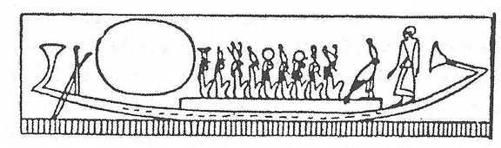
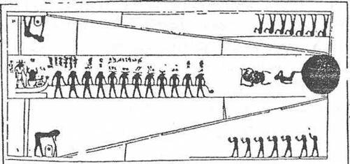

VII. BAB
Arkologların "Sonsuzluk Evleri"nde Buldukları Şeyler
Arkeolojik araştırma gruplarının kazıları, Mısırlılar’ın mezarlarında biriktirdikleri eşsiz çeşitlilik ve zenginlikteki cenaze eşyalarını ortaya çıkarmıştır. Ölü, hayatında sahip olduğu her şeyi “Sonsuzluk Evi’nde buluyor. Öbür dünyadaki rahatının, menfaatsiz olmasa bile, dikkatli bir özen konusu olacağından emin bulunuyordu. Bilginler, mezar odalarında gerçek lüks eşya pazarları, birbiriyle ilgisi olmayan eşya yığınları buldular; güzel ölülerin sarı yüzlerini süslemek için boya çanakları, peruklar, savaş arabaları, mumyalanmış koyun butları; bütün bunlar gelişigüzel yığılmış ve mumyalanmış ölü Osiris’i temsil eden yeşil ve mavi heykelciklerle, hazır zıpkınlar, zeytin ve persea (Avukat armudu anlamına gelirse de, bu meyvenin Amerika kökenli olduğu düşünüldüğünde, bir çeviri hatası olması gerektiği anlaşılabilir) dallarından yapılmış zarif buketler, yapıcısının mührü vurulmuş iyi cins şarap küpleri, meşaleler, şeffaf kuvars vazolar, mumyanın törene hazırlanışı sırasında kullanılan kutsal hayvanlar biçiminde yataklar, ölülerin çıktığı mahkemede etkili olabilecek “kalp skarebeleri”; bunların üzerine, şu duanın kazınmış olduğu görülür:
“Ey anamın bana verdiği kalp! Ey bedenimin bir parçası olan kalp! Karanlıklarda tanıklık edeceğin zaman aleyhimde bulunma; Anubis, Thot ve Osiris’in karşısında benim sözümün düşmanı olma... Hakimlerin terazisi önünde benim gibi ol ve ismimin çakal leşi gibi kokmasına izin verme!”
Firavunların Mısırındaki mezarlarda, uzmanların çıkardığı envanter şunlardır. Sem rahiplerinin elbiseleri (bunlar ölülerin ağız ve gözlerini küçük parmaklarıyla açıyor, onları yağlıyor, saçlarını düzeltiyor, şeritlerle süslüyor, Osiris’in göğsünde çaprazlama tuttuğu asa ve kırbaç gibi, göğüslerine, çaprazlama asa ve kırbaç koyuyorlardı); Semavi Nil’in her iki kıyısındaki Elize Kırlarında avlanmaları için aletler; şeffaf kaymak taşından içine kokular ve kıymetli yağlar konulmuş vazolar; Ra, Teb, Amon, Osiris ve dirilme gününde açılacak Dünya Yumurtasını yapan Ptaah adına borular; kutsal Amon kazları; uçlarına, cenaze kayıklarının aşağı dünyanın sularında kaybolmaması için Horus’un Gözü resmedilmiş büyülü kürekler; bugün bile Teb ovalarında Fellah’ların ellerinde görülenlere benzeyen “heket” sopaları; Lübnan sedirinden yapılmış, içine papirüsten sandallar, üçgen peştamallar, okçu eldivenleri konmuş tahta çekmeceler.
Katiplerin mezarlarında ince kamışlarla dolu kalem mahfazaları, her memurun yazmak ve saymak için gereksinme duyduğu aletler, mühreler (fr. Lissoire: parlak ve pürüzsüz bir deniz kabuğu olup kağıdı parlatmakta kullanılır), su kabı, gereksinme duyulacak her rengi taşıyan paletlerden hiçbiri bütün bu eşya, papirüs özünden yapılmış, üstü bez kaplı sepetlerde bulunuyordu unutulmamıştı. Jean Capart’ın dikkati çektiği gibi, piskoposlarınkine (eveklerin) benzer, Osiris’in kudret ve krallığını simgeleyen asalar, ölülerin milyonlarca yıllık mevcudiyetini gösteren Ankh işareti ve şeritlerin arasına konulmak unutulmazsa, dirilmeyi sağlayan “djed” ve “thet” işaretleri; karnı yıldızlarla dolu Menourit ineklerini saymayı unutmayalım.
On binlerce oushebtis, Osiris’in cennetinde doğruların yiyecek ve bakımlarının ebediyen sağlanması, “kumun doğudan batıya taşınması” gerektiğinden, ölünün günlük işlerini onun yerine görmekle görevli küçük heykelcikler bulunmuştur. Altın çekirgeleri; antilop derisi kaplı, hafif tahtadan yapılmış kalkanları, devekuşu tüyleri bozulmamış flabellumları (uzun bir sapın üstüne tavus kuyruğu vs., papirüsler konulmuş büyük yelpaze ki bir esir tarafından taşınırdı; Latin ve Doğu Kilisesi de kullanmıştır); şapka ve parfüm kutularını; üzerleri gökkuşağı renkli skarabe kanatlarıyla süslenmiş av sahneleri resmedilmiş yay mahfazalarını da saymalıyız. Ölünün cinsel isteklerini yerine getirecek çünkü ölülerin de bir haremi vardı çok iri kalçalı çıplak kadın heykelciklerine de bir yer ayırmak gerekmektedir. Haklı tutkuların rahatlıklarını bozmaması, ölü ocağını hiç terk etmemeleri, cenaze odasından kaçmamaları için bu kadın heykellerinin bacakları yoktu; kuşkusuz, bu dünyadakiler gibi, bunların sahipleri de kıskanç olduklarından, cariyelerinin başka yerlerde suçlu ilişkiler kurmalarından korkmamaları gerekiyordu...

Ölü, ayakta, Güneş Kayığının başında, yüzü ona öbür dünyaya doğru kendisine eşlik eden tanrısal mürettebata dönük durumda. Doğrulardan bulunmuş ölü, Ra'nın kayığında, gökyüzü yolculuğunu yapabilmesi için yerini almış. Ruhu, Ra'da kaybolmadan evvel, Osiris’le birlikte, öbür dünyaya doğru yol alıyor. (Nu Papirüsü, CXXXIV. Bab'ın vinyeti.)
İngiliz arkeolog Emery, ikinci sülalenin bir yüksek memuruna ait mezarı bulduktan sonra hayretler içinde kaldı; A. Erman, bize bu olayı şu şekilde aktarmaktadır: “Bu memurun mezarı kırk iki salondan oluşuyordu! Bunlardan biri, üzerine sofra takımları konulmuş bir yemek salonuna benziyordu. Kadehler ve tabaklar kaymak taşındandı; tabaklarda kızarmış güvercinler, Nil balıkları, çeşitli sebzeler, ondört davetli için bir antrikot, soslar ve meyveler, yuvarlak pastalar, üçgen biçimli beyaz ekmek somunları vardı. Bütün bunlar Mısır ikliminde kurumuşlarsa da, iyi korunmuş haldeydiler...”
Ölülerin tanrılarına ilgi duyan hiç kimse, toprağın altında onları bir defa görmüş olsa bile, duvarları Ölüler Kitabının ayinlerindeki büyülü dualarla kaplı kral mezarlarının bu şaşılası “Altın Salonlar”ını hiç unutamaz. Buralarda, bu ölü saraylarına gelmiş olan, hiçbir canlının bakmaması gereken öbür dünya tanrılarını görürüz. Bunlar, ölmüş olanlara “hoş geldin” demek için, oniki evrene açılan kapıların eşiğinde, onları mağaralarda bekleyen canavarlardan önce karşılamak için gelmişlerdir. Nehrin kıyısında, gecenin her saatinde, uçucu bir hale içinde uzun yılanların yedekte çektiği Güneş Kayığı görününce, ölülerin sonu gelmez gürültüsü işitilir...
Kadavraların Mumyalanışı
Eski Mısırlılar, cesetlerinin kokmasından, öbür dünyada nefeslerini yeniden hiç bulamamaktan korkuyorlardı. Bu korkuya Ölüler Kitabının bütün duaları boyunca rastlamak mümkündür. Ölümden sonra bedenlerinin bozulmadan kalması düşüncesi, onların saplantısıdır. Şüphesiz biliyorlardı ki ölü tabutundayken, tanrıça Nout’un kolları arasında olacaktır. Nout aracılığı ile ölü değişime uğrayacak ve Nout’un bedenindeki doğumu kaçınılmaz olacaktır. Tabutu ışık, ruhun ışıklı örtüsü, bir sonsuzluk tohumu olan ruhun “Osiris Gömleği” idi. Biliyorlardı ki zaman ve uzayın ruh için hiçbir boyutsal anlamı yoktu ve terk etmiş olduğu bedenin içinde bunlar “zamanında olmuş olan ve daha ileride olacak olan şeylerdi.”
Tabutun içinde şekillerin esrarlı gecesi cereyan ediyordu ve bu gecenin içinde, ruhlar tapınıyorlardı. Ancak bedenin de kaçınılmaz çürümekten korunması gerekiyordu ve bunun için Mısırlılar cesetleri mumyalamaya son derece özen gösteriyorlardı. İlk insanlara cesedi bozulmaz hale getirmeyi öğreten “cenaze şeritleri tanrısı” Anubis’ti. Bu da, ölüm anında cesedi terk eden ruh kuşunun binlerce yıl sonra bile, Nil Vadisinde yaşadığı sırada
canlandırmış olduğu bedenle her an birleşebilmesi içindi. Şu halde vücudun binlerce yıl bozulmadan korunabilmesi zorunluydu; çünkü çürüme olursa, oraya yerleşemeyecek olan ruh, sonsuza dek kaybolmaya mahkumdu. İnsan bedeninin kesin olarak toprakta yok olmasını önlemek için Mısırlılar cesedi cenaze odasına koymadan önce tuz ve ziftle işleme tabi tutuyorlardı. Ceset 70 gün boyunca doğal sodyum hidro karbonat ve zift salamurasına yatırılıyordu. Bazen uzmanlar önemli bir kişi veya firavun söz konusu olduğu zaman kendilerine teslim edilen kadavranın mumyalanışına öyle büyük bir özen gösteriyorlardı ki cesedin hazırlanışı on ay sürebiliyordu.
Rahipler Ölüler Kitabının bazı bölümlerini okurken kadavranın tüy ve kılları özenle tıraş ediliyor, burun deliklerinden sokulmuş özel demir araçlarla beyin parça parça çıkarılıyordu. Sonra operatör karnı açıyor, iç organları boşaltıyordu. Yan tarafın yarası balmumu veya metal bir plakla örtülüyor, karnı saran kordonlarla yerine tutturuluyordu. Bu levhanın ortasında Horusun büyülü gözü “oujda” vardı; nekropollerde, muska görevi gören bu kutsal simgeden binlercesi bulunuyordu.
Büyülü gözün sağında ve solunda dört cenaze meleği veya Horusün dört oğlu vardı. Bunlar, içine ölünün karaciğeri ve iç organları konmuş dört kabın koruyucularıydılar: Köpek-maymun başlı Hapi, insan başlı Amset, köpek başlı Douamoutef ve atmaca başlı Kebeh-senouf. Yalnız, kalp yerinde kalıyordu; çünkü Ölüler Kitabı’nda şöyle yazılıydı: “Gerçek kalbin seninle birlikte olacak.”
Bedenin içi dikkatlice şarap ile yıkanmıştı; atar damarlara kimyasal bir madde şırınga ediliyordu. Yağlar kazınıyor, karnın içi balmumu, siyah frenk üzümü, tarçın, kavrulmuş lotus tohumları, sedir yağına batırılmış kumaş tamponlar, mür, antiseptik yağlı cisimlerle dolduruluyordu. Gözlerin yerine sırça gözbebekleri yerleştiriliyordu. Ciğerler, karaciğer, bağırsaklar ve mide, Yunanlıların adına “Canope” dedikleri dört vazoya konulmadan bozulmamaları için ilaçlanıyordu. Erman tarafından bildirildiğine göre (Canope) vazoların içinde keten sargılarla ayrıca sarılmış falluslar bile bulunmuştur.
Bu temizleme ve iç organların boşaltılması işlemlerinden sonra eller, ayaklar ve yüz, önceden katrana batırılarak pisliklerden arındırılmış şeritlerle sarılıyor, şeritler arasına önceden de söylediğimiz gibi muskalar, söğüt ve zeytin yapraklarından yapılmış çelenkler, peygamber çiçeği demetleri, mavi lotus yaprakları konuyordu. Mumyanın bir insan vücudu şeklini koruması için, keten şeritlerin vücuda çok sıkı sarılarak, biçiminin bozulabileceği yerlere koruyucu tamponlar konuyordu.
Kullanılan keten şeritlerin uzunluğuna gelince; bir mumya üzerinde, mumyayı tamamen sarmak için, sekiz defa katlanmış yirmi metre uzunluğunda bir keten parçası bulan Dr. Derry’nin keşfini hatırlatmak klasik olmuştur. Bu şerit daha sonra bir fırça ile kalın bir tabaka halinde sürülen sıvı zamkla örtülüyordu.
Ölüyü şeritlere sarmadan önce uzmanlar yüzü düzeltiyorlar, ölüye makyaj yapıyorlardı; dudakları, tırnakları, avuçları ve ayak tabanlarını boyuyorlar, içi boşaltıldıktan sonra kafatasında kalması olası akıntıları önlemek için burun deliklerini tıkıyorlardı. Ceset hazır olunca, uyuyan biri gibi cenaze yatağına yatırılıyordu. Baş, üzerinde öbür dünyayı seyredebilmesi için göz resmi yapılmış maskesiyle, taştan yapılmış bir yastığa dayanıyordu.
Herodot’un Eski Mısırlılar’ın uyguladığı mumyalama sanatı üzerinde anlattıkları, arkeologlarca doğrulanmaktadır. Erman, “Yüksek bir memurun mezarında bulunmuş bir kitabe de bu bakımdan ilgi çekicidir,” diye yazmıştır.
“Yetmiş günlük salamura dönemi geçince, güzel ve rahat bir mezara konma töreni olacak ve sen ölüm yatağına bırakılacaksın... Kurban edilmiş boğalarla götürüleceksin... Mezarına erişene kadar yoluna süt serpilecek. Rahip, ağzını açacak ve temizlenmeni tamamlayacak. Horus, ağzını, gözlerini ve kulaklarını açacak. Bedenin şimdi sana ait olan her şeyde mükemmeliyyete daha yakın olacak. Sana Kutsal Kitap’tan dualar okunacak. Sana bir cenaze kurbanı sunulacak ve önüne sunaklar konulacak. Kalbin, dünyada olduğu gibi, yanında olacak. Doğumunda olduğu gibi bedeninin içine gireceksin. Toprağın, Batı Dağının içinde ilerleyeceksin ve cenaze dansçıları neşeyle sana doğru gelecekler.”
Herodot, fakirlerin mumyalayıcılarının, kendilerine emanet edilmiş ölü kadınlar gençseler, bazen onlara tecavüz ettiklerini aktarmıştır. “Bu yüzden,” diye devam etmiştir, “genç ölüler mumyacılara götürülmeden üç gün bekletiliyordu. Çok iyi bilgi edinmiş olan Herodot, akrabaları ve dostları çok fakir olan ve ölüye uygun bir cenaze töreni yapamayan, yani birinci ve ikinci sınıf mumyalama sağlayamayanların uğradıkları bir parça saygısızca muamelenin ilgi çekici ayrıntılarını bize aktarmaktadır.
Teb mumyacıları, az çok ustalıkla boyanmış mumyaların sert nesnelerle kaplanması için yapabildikleri çeşitli avantajlı modeller teklif ediyorlardı. Bunlardan biri seçiliyor ve menfaatçilik unutulmaksızın fiyat ve kalite üzerinde pazarlık yapılıyordu. Herodot, Amon’un ünlü şehrinde, ona aşağılıkça gelen, sanatçılarla aziz ölünün akrabaları arasında sürerken kendisini hayretler içinde bırakan bir pazarlığı bize aktarmaktadır. Bu akrabalar, istenilen ücreti vermeye yanaşmaksızın, en fazla muskanın, “Doğrular”ın zararına zenginleşmesini bilen kaygısızların komşu nekropollerden belki de üçüncü kez çaldıkları “kalp skarabesi” de dahil olmak üzere mumyaya konulmasını istiyorlardı. Çekişme devam ederken, biraz suç ortağı olmak için veya menfaat icabı ilgilenen ağlayıcı kadınlar, yan sokakta uluyorlar, mesleki büyük acılarını kusursuz bir şekilde taklit ederek, repertuarlarına uygun harika jestlerle, başlarına kum saçıyorlardı.
Sadece hatırlatmak için, kocasının kadavrasını birkaç kupa bira karşılığında rehin veren dul kadına da değinelim. Kötü bir yorumla, bu birkaç kupa biranın dul kadının acısını hafifletmek üzere kullanıldığını sanmayalım! Dindarlığın gereklerine uygun olarak bu bira, Nil kıyısında olduğu gibi mezarında da susuzluğunu gidermesi için kadavranın yanına bırakılacaktı...
Halktan Kişiler İçin, Bir Öküz Derisi ve “Ölüler Kitabı”ndan Bir Dua Yazılmış Papirüs; Fakirlere Libya Çölü’nde Açılmış Bir Kum Çukuru
Kendilerine ne lüks kaplamalar, ne ağlayıcılar, ne muskalar sağlayabilen fakir kişiler mumyacılarca toptanmuamele görüyor ve çırakları, kadavraların iç organlarını çıkarırken ellerini işe alıştırıyorlardı. Masrafları çoğaltmamak için işlemler basitleştiriliyordu. Kadavralar kasaplardakine benzer çengellere asılıyor, içleri boşaltıldıktan sonra yetişkinlerden beşer ceset alabilen büyük teknelere atılıyordu. Cesetler otuz gün süreyle tuzlu bir eriyikte yatırılıyordu. Mumyalama bitince, akraba veya dostlar kadavralarını geri alıyorlardı. Bir tabut satın alamayanlar, ölüyü bir öküz derisine sarıyor, içine birkaç büyülü formül, Ölüler Kitabından alınmış birkaç dua yazılı bir papirüs koyuyorlardı. Böylece ölü, sağlığında ne kadar sefalet içinde olursa olsun, büyülü formüller ve dualar sayesinde, temize çıkmak için ölüler mahkemesine gelecek ve derisi bir soğan parası etmeyen o, firavunun en zengin ve en güçlü tebaasıyla birlikte, tanrılara denk olacaktı!
Bu yanıltıcı görünüşler dünyasında ortaklaşa ödenip paylaşılan bir cenaze kuyusunda bile yer ayırtamayanlar, biraz da kaçak olarak, bir palmiyenin yapraklarına sarıldıktan veya daha az yer tutması için ikiye katlanıp bağlandıktan sonra, ölülerini Libya Çölü sınırında bir çukura gömüyorlardı... Ancak bazen, aysız bir gecede, ucuza mumyalanmış bir cesedi taşıyan gölgeler, zengin Mısırlılara ayrılmış nekropole süzülüyorlar; zenginlere düzenli olarak yapılan kurbanlardan ve yüceltmelerden yararlanabilmesi için kaçak ölüyü alelacele bir soylu mezarının yanına gömüveriyorlardı. Eninde sonunda, zenginlerin veya fakirlerin ne değerde olduğu belli olmayan bir dünyada, ölüye gösterilen bu sevgi ve fedakarlık hareketinin göz önünde bulundurulacağı umuluyordu.
Hermopolis Tapınağı
Arkeologlar, Eski Mısır nekropollerinde birçok mumyalanmış hayvan buldular. Bunlar arasında kedileri, şahinleri, yılanları, iblisleri, fareleri, kurbağaları, kalıntıları küçük bronz kaplara konmuş gübre böceklerini sayalım. Bunlara maymunları, kutsal boğaları, Fayoumda kendi kutsal şehirleri Crocodilopolise sahip olan iğrenç timsahları da ekleyebiliriz. Rahipler bu kutsal hayvanlara sofulukla bakıyor, rahatlıklarına özen gösteriyor, bizzat firavunun cenaze sarayına taşınması söz konusuymuş gibi, onları da aynı merasimlerle gömüyorlardı.
Yunanlılar Hermopolis’te ibişlere ayrılmış büyük tapınakta, binaların, bahçelerin güzelliği, birinci sınıf mumyalanmaya hak kazanmış dokunulmaz kuşların kaynaştığı bataklıklar önünde hayran kaldılar. Günümüzde, içinde kutsal ibişlerin rahiplerce “Ölüler Kitabı’nın duaları okunduktan sonra mumyalandığı, kayaya oyulmuş çok geniş bir yeraltı salonu bulundu. Sözü bu tapınağı bulmuş olan arkeolog Cabra’ya bırakalım: “Bazısı yüz elli metre uzunluğunda sayısız koridorları olan bir labirent, kutsal ibislerin mumyalandığı salon ile bağlantılıydı. Uzun yıllar süren sabırlı çalışmalardan sonra, eski Mısır’ın bütün bölgelerinden gönderilmiş ve çok iyi korunmuş olan ibis mumyalarını ihtiva eden dört bin cenaze kavanozu bulundu. Şaşılacak şey, değil mi? Ancak, hepsi bu değil. Bir mihrabın bulunduğu bir salonda, yaldızlı tahtadan, oturmuş bir şebek ve iki ibis heykeli görülüyordu. Her üçü de arkasında Ank-Hor’un büyük rahibinin mezarı bulunan bir kapıya bakıyorlardı. Kaymak taşından vazolar ve 365 fayans heykelcik, cenaze kültü için kullanılıyordu. Bu, toprağın 34 metre derinliğine oyulmuş dev sarayda, ibislere gösterilen saygı karşısında şaşkınlığımız tarif edilemez.”
Kutsal beyaz Apis Boğasının cenaze töreni de ünlüdür: Firavun ona mezarına kadar eşlik etmiş ve 200 metrelik alay, 150 sfenks heykeli arasındaki yoldan geçmiştir. Rahipler, san ve kırmızı yekpare bir kuvars billurundan yapılmış dev boğa heykelinin önünden gidiyorlardı. Mariette’in geçen yüzyılın ortasında keşfettiği Apis Boğası hakkında yazdığı şu satırlar, bugün de tekrarlanabilir:
“İnsan bu 3000 yıllık dev heykellerin, Mısırlı sanatçılar hiçbir çelik araca sahip değilken nasıl yontulduğunu ve nasıl ayna gibi parlatıldığını sormadan edemiyor.”
Kötü Nefesler, “Kher-Heb” Rahibi ve
“Ateş Çemberi”
Muskalar, büyüler, büyülü işaret ve sözler, boyuna asılarak taşınabilen veya kapıya asılan tılsımlar, dünyanın bütün halklarında korkutucu veya gülünç özelliklere sahip olmuşlardır. Mısırlılar bu sırlı şeyleri kötü ruhların etkilerinden, kötülük taşıyıcı akreplerden kurtulmak, kızgın timsahların hücumundan kendilerini korumak için kullanıyorlardı. Bu timsahların önünde, Ra'nın, Sekhmet’ih veya Thot’un isimleri, yalnız inisiyelerin bildiği esrarlı işaretleri havada çizerek zikredilmeliydi. İnsanların zihninden yitmiş hangi masalsı devirde, ağzı bilgili İsis, ölümsüz ruhların kayığını çağırmak için gökyüzüne haykırdı? Kum üzerindeki bir gölgenin şeklinden, bir kapı eşiğindeki acayip işaretten korkan halktan kişilerin ne yapmak gerektiğini bildikleri için tuttukları büyücüler, trans halinde çömlekleri kırıp çiğniyorlardı. Bunlar, kuzey veya güney rüzgarına karşı söylendiği zaman, yaşayanları mevsimler boyu rahatsız edebilir, bizimkinin altında bulunan evrendeki ölülerin davranışlarını etkileyebilirdi.
Eski Mısırlılar özellikle şekiller, ölü bir insanın dirilip gözükmesi, nefesler, yerler, aşağı dünyadaki geceler tarzında, açıkça alevler ve sular arasında gözüken şeytani güçlerden korkuyorlardı. Kendilerini kötü niyetli ölülerden korumak için muskalar da kullanıyorlardı. Bu muskalar, “onların hırsız gölgelerini hapsetmek içindi; yaşayanların dünyasında mezar soyguncuları olduğu gibi, ölülerin arasında da çocuk hırsızları vardı. Zamanlı zamansız, Ölüler Kitabı okuyucusu Kher-Heb rahibinin pahalı yardımlarını arıyor, ondan yedi düğümlü ipi veya acayip bir halk inancına göre, tanrıların nefesini tutabilen, fare kemikleriyle dolu bir keseyi kutsamasını istiyorlardı. Fakat muskalar akla gelmeyecek kadar çok sayıda kullanılmışsa, ölülerin bu muskalardan mahrum oldukları söylenemez. Mumyalar muskalarla örtülüyor, yanlarına, büyülü “Uzun Yürüyüş” asası bırakılıyor, şeritlere sarılı başının altına acayip şekillerle resimlenmiş “ateş çemberi” konuyordu.
Firavunun Laneti
Toutankhamon’un cenaze salonunun giriş kapısı üstünde “Burada dinlenen firavunu ebediyeti içinde rahatsız edecek kişiye ölüm kanatlarıyla dokunacaktır!” diye yazılıdır. Bir çeyrek yüzyıl önce, bu dünya zamanının sonuna kadar kanatlı güneş tarafından korunmuş bulunan Toutankhamon’un mezarına giren her kişinin üstüne çökmüş olan lanet kolayca hatırlanacaktır. Mezarın kapılarının mühürlenişinden, son rahibin tapınağın koruyucusu Anubis önünde, kilden bir kaide üzerinde titrek bir ışıkla yanan büyülü meşalesini söndürmesinden, yıldızlarla süslü mavi tavan altındaki parıltılı altın kral heykellerinin yanma son çiçek demetlerinin konulup konulmadığına bakılışından ve son duanın okunuşundan beri otuz beş yüzyıl geçti. Evet, otuz beş yüzyıl geçip gitti ve o zamandan beri yüz kuşak insan yok oldu...
Bu üç bin beş yüz yıl boyunca, bu 12 Şubat 1924 günündeki, yedi yıllık bir kazıdan sonra, Lord Carnarvon ve Howard Carter’ın kral mezarına girişine kadar, hiçbir zaman, hiçbir şey firavunun dinlenişini bozmadı. Onlar, bir mum ışığında, zamanın gecesinde hiçbir insan varlığının seyredemediğini seyrettiler. Som altından 900 kilo ağırlığında bir tabut; ve tabutu koruyan melek kanatlı, çıplak tanrıçalar...
Otuz beş yüzyıl önce Toutankhamon’un cenaze odasının kapısına töreni yürüten rahip tarafından konulmuş kraliyet mühürlerini kırdıkları zaman nasıl bir heyecan duydular? Evet, bilinçsiz mezar zorlayıcısı seçkin Ingiliz arkeologlarının, genç firavunun dul karısının son anda, mühürlerle mezarın kapıları ebediyen kapatılmadan, Babil anıtlarında görüldüğü gibi, seyrek gül motifleri işlenmiş cenaze şalının üstüne bıraktığı, ancak yeni solmuş gibi duran kır çiçeklerinden mütevazi buketi, her şeye karşın suçlu ellerle elledikleri zamanki şaşkınlıkları nasıldı?
Fakat tanrıların amaçları, alışılmamış şeyler olmadığı zaman anlaşılamaz: Lord Carnarvon grubunun hemen bütün üyeleri, hiç kimsenin görmemesi gereken şeyi gördükten az bir süre sonra öldüler! Çakal başlı Anubis, birbiri içine konmuş, kenarları dinsel resimlerle süslü ve Ölüler Kitabından bölümler yazılı dört sandığın önünde bağdaş kurmuştur; bu dört sandığın içinde firavunun insan şekilli üç tabutun içine konduğu büyük bir tabut vardır. Şamdanların ışığıyla şöyle böyle aydınlatılmış, yarı karanlıkta altının tatlı parıltısı içinde cenaze tanrıçalarının sıkıca sardığı Kral Osiris’in şaşılacak yüceliği gerçekten etkileyici bir görüntüdür...
Öbür dünyanın tanrılarının, XX. yüzyılın beklenmeyen ziyaretçilerine değil, Kral Toutankhamon’a, İki Ülkenin Efendisi’ne, Ra'nın oğlu, Neb-Kheprou-Ra’ya, eşyadan çıkan doğaüstü bir ışık içinde “hoş geldin!” demeleri ne acayip manzaradır! Bir mezara konmuş bir tek Ölüler Kitabının orayı güneş ışığı girmişçesine aydınlattığı doğru mudur? Lord Carnarvon’un ve Howard Carter’ın mumyanın gerdanlıklarını, dövme altından kıymetli taşlar kakılmış maskeyi, altın ve mavi mineden o eşsiz koyu Mısır mavisinden-mücheverleri, asaları, muskaları, lotus çiçeği yaprakları, sembolik kuyrukları, kamaları, üzerine değişik renklerde cam kakılmış yedi altın plakadan olu şan tören önlüklerini, karın ve bacağa geçirilmiş altın halkaları, cenaze rahibinin törende kullandıktan sonra mezarın bir köşesine bıraktığı panter derisini bir bir çıkarırken elleri titremedi mi? Lord Carnarvon ve Howard Carter, firavunun yanında, ayakta, yüzyılların sonuna kadar onu koruyacak küçük kuşruhunu ellerine aldıkları zaman titrediler mi?

Solda, aşağıda ve yukarıda, Gece Tünelinin girişinde, her biri bir tanrı tarafından korunan iki Atebui. Her sabah, Anubis’e ait olan ve Ölü Osiris için ışıyan Şafak Güneşi, "Güne Çıkış Işığı’’, aşağıdaki Atebuiden (A noktasından) çıkar. Göğe doğru yükselir ve gündüz yürüyüşünün ortasında, (üstünde Horus ve Koç Başlı Khepra) Göksel Nil’e dik bir şekilde görülmektedir. Sonra, tekrar inecek ve her akşam yukarıdaki (B noktasında) Atebuide kaybolacaktır. Işığı Seth’in, öbür dünyanın olan güneş olacaktır. Solda Güneş Kayığı, Nil boyunca, gündüzün oniki saatinin tanrısınca çekilmekte. Kayıkta, Heliopolis'in Bennou kuşu görülüyor. Ben nou kuşu Osiris’ in evrensel ruhunun sembolüdür; sonra, kendi kendine şekil veren Khepra ve koç başlı bir güneş tanrısı görülüyor. Yukarıda ve aşağıda sağda, Horus başlı yedi Doğum Tanrısı, Nil’in doğuşunda ve insan başlı, Batının Yedi Tanrısı batı kıyısında duruyorlar. Hepsi Güneş Kayığı’nın ortaya çıkışını selamlıyor.(Netchemet Papirüsünden.)
Evet, mezarının amber renkli ışığında korkunç bir lanet, duvarlara resimleri yapılmış ölüm tanrılarının önünde Toutankhamon’un mumyasını seyredenlerin peşini uzun zaman bırakmadı. Keşfinden az bir süre sonra, Lord Carnarvon can çekişmeye başladı ve korkunç vizyonlar içinde, Toutankhamon’un adını haykıra haykıra öldü. Albay Aubrey Herbert, kralın mumyasını görür görmez toprağa verildi; sonra, Lord Carnarvona hastalığı süresince bakan hemşire, mezarında da onu takip etti. Bütün Teb ovasında ağızdan ağıza “firavunun laneti’nden söz edilmeye başlandı.
Howard Carter’ın sekreteri ve mezarın açılışı sırasında hazır bulunan Lord Westbury’nin tek oğlu bilinmeyen bir hastalığa yakalanarak esrarlı bir şekilde öldü. Sonra sırasıyla Howard Carter’ın yakın dostu Profesör La Fleur, cenaze odasının duvarını delen Arthur Mace, Toutankhamon’un mezarına ilk girenlerden ve birkaç gün sonra kendini asan Doktor Evelyne White öldüler.
O zamanların bir haber muhabiri, bu sonuncusu için “Ona yaşayacağı hayat yerine ölümü tercih ettiren bir lanet yüzünden öldü,” demiştir. Sonra, Tountankhamon’un mumyasının radyografisini incelediğinin ertesi günü, Archibald Douglas Ree açıklanamaz bir fenalık hissederek ani bir ölümle öldü.
Otto Neubert’in bize naklettiğine göre, bu kadar esrarlı ölümler hakkında kendi adına araştırma yapmak isteyen bir Mısırlı hükümet mensubu, yanma bir yılan oynatıcısı alarak Krallar Vadisine gitti. Araştırmasına başlar başlamaz o da öldü!
Bundan sonra da, Eski Mısırlılar’ın öbür dünyasına yapılan bu uğursuz yolculuktan sonra, mumyaya ilk dokunanlardan biri olan Douglas Derry, Toutankhamon’un silahları arasındaki bir maşrapaya dokunan G. Davis, Leydi Carnarvon, Profesör Breastead, Winlock, Hakness, Sir Alan Gardiner, Foucard, Jay Gould, Joel Woolf; toplam olarak ON YEDİ KİŞİ ÖLDÜ!
Aynı ekipten bunca ölümü nasıl açıklayabiliriz? Otto Neubert “Bir zehir miydi?” diye yazıyor; Mısırlılar zehirlerin karışımı hakkında çok büyük bilgi sahibiydiler. Rahipler ölü odasının taşlarını mı zehirlemişlerdi? Bazı bilginler etkilerini Mısır’ın kuru ikliminde bile çok uzun zaman kaybetmeyecek zehirlerin mevcut olduğunu iddia ediyorlar. Gerçek her zaman bir sırla çevrili kalacak. Acaba bu, tanrıça İsis’inki mi? Oakridge atom şehrinde çalışan Amerikalı bilginler, Mısırlıların atom sırrını bildiklerini varsayıyorlar. Firavunun mumyasına, ısınmaları binlerce yıl etkili kalabilecek radyoaktif maddeler mi koydular?
Yalnız Doktor Howard Carter uzun yıllar, Ölüler Dağının gölgesinde, hiçbir canlının görmemesi gerekeni gördükten sonra, tam bir sağlık içinde yaşadı...